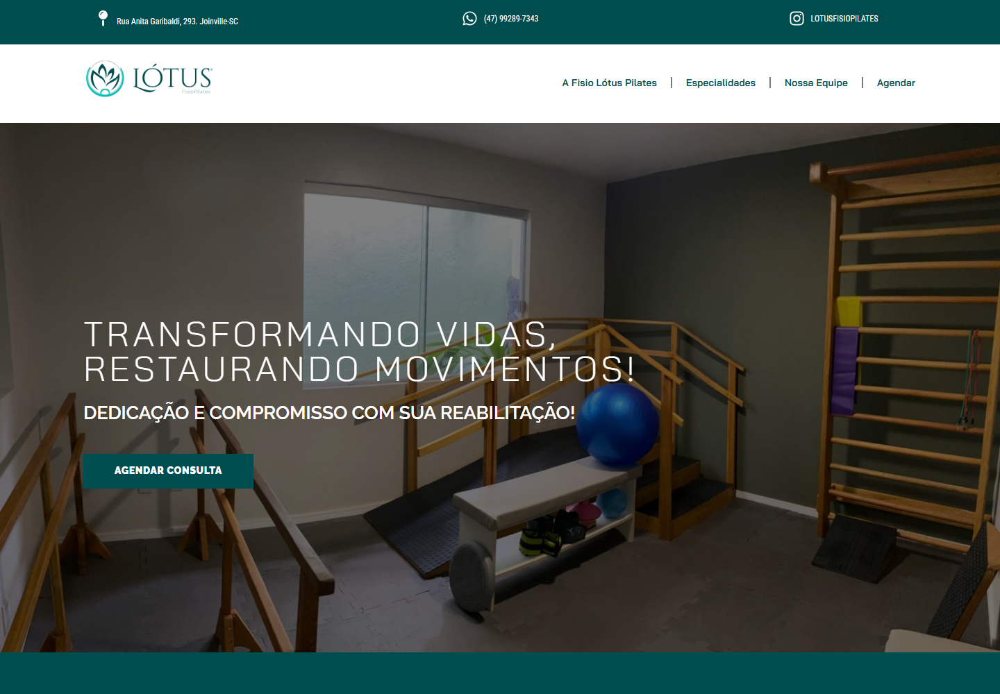
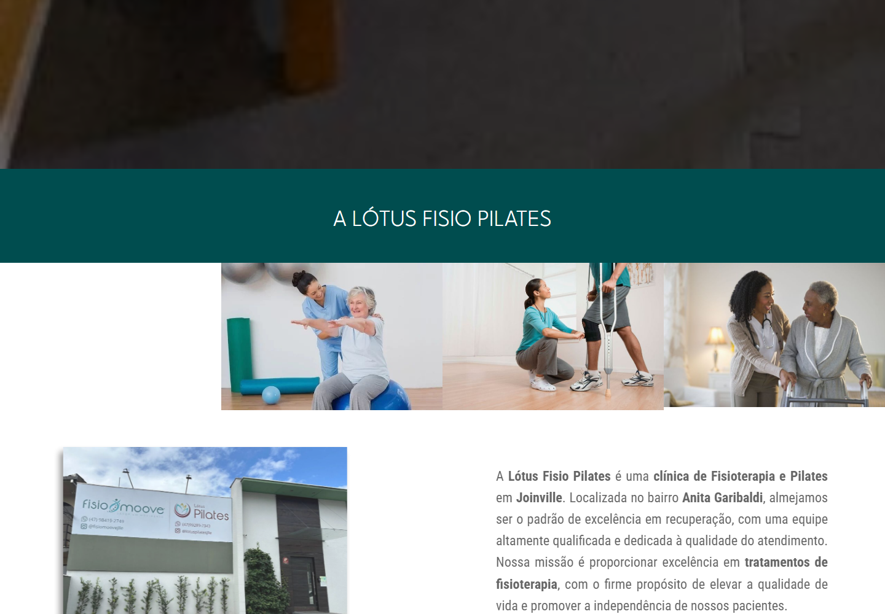
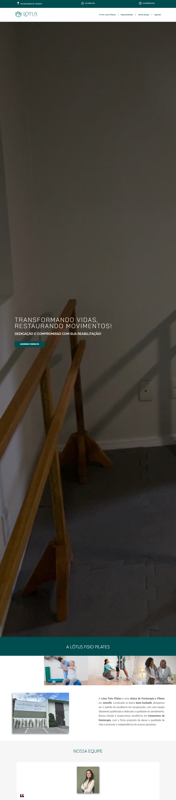

Diagnóstico
SEO forte, mas experiência pesada no celularO site já é bem entendido pelo Google, mas ainda demora mais do que deveria para abrir em conexões móveis.
Análise do site existente
Uma leitura simples do site oficial da Lótus: como ele se apresenta hoje, onde perde velocidade no celular e como a nova versão estática da unidade Anita Garibaldi pode comunicar melhor.
Referência visual
Primeiro, a referência: esta é a comunicação atual que o visitante encontra antes de qualquer proposta nova.



Diagnóstico
SEO forte, mas experiência pesada no celularO site já é bem entendido pelo Google, mas ainda demora mais do que deveria para abrir em conexões móveis.
Impacto
O visitante espera antes de conhecer a clínicaO maior elemento da tela aparece em 5,4s no celular, tempo alto para uma landing page.
Oportunidade
Manter autoridade com uma página mais diretaA nova versão pode preservar a força da marca e focar a mensagem na unidade Anita Garibaldi.
Site atual · PageSpeed Insights
O Google dá notas de 0 a 100. Para uma apresentação simples: verde está bom, amarelo pede atenção e vermelho indica problema que pode atrapalhar a experiência.
Core Web Vitals
Como há pouco tráfego para gerar dados reais de usuários, o PageSpeed usa uma simulação de laboratório. Ainda assim, ela mostra onde a experiência fica mais lenta.
Métrica técnica: LCP no celular. No computador, o mesmo indicador fica em 1,0s.
Métrica técnica: FCP no celular. No computador, aparece em 0,6s.
Métrica técnica: TBT. No celular e no computador, o resultado foi 0ms.
Métrica técnica: CLS. No celular e no computador, o resultado foi 0.
Depois que o site aparece, ele não trava. A questão é o tempo até a primeira impressão.
Com SEO em 100/100, a nova página deve preservar a estrutura e reduzir peso.
A página da unidade não precisa carregar tudo que um site institucional completo carrega.
Maiores gargalos no celular
O peso total da página no celular é 4.070 KiB, cerca de 4 MB. Para uma landing page, cada MB adicional custa segundos em conexão móvel.
Arquivos que poderiam ficar salvos no navegador do visitante não têm regra de cache configurada.
Quase 2 segundos perdidos com scripts e estilos que o navegador precisa baixar antes de mostrar qualquer coisa.
Imagens maiores ou menos comprimidas do que o necessário para o tamanho exibido em tela.
Texto potencialmente invisível enquanto a fonte customizada carrega, sem font-display: swap.
Boa parte do CSS carregado não se aplica a essa página específica.
Cerca de 4 MB transferidos no celular.
Acessibilidade
A nota fica em 81 no celular e 86 no computador. São ajustes importantes para quem usa leitor de tela ou navega pelo teclado.
Alguns controles não dizem claramente sua função para leitores de tela.
Textos genéricos como "clique aqui" perdem sentido quando lidos fora de contexto.
O recurso de pular direto para o conteúdo não recebe foco de teclado corretamente.
Nova versão estática
A nova versão remove a base genérica do site oficial e mantém o que importa: conteúdo local, estrutura clara e assets controlados.
Sem builder genérico carregando scripts que essa página nunca usa.
121 KB em vez de possíveis megabytes, servida via <picture>.
"Consultar horários" e "Falar com a equipe", sem depender de "clique aqui".
Primeiro elemento focável da página, corrigindo o problema de foco do site atual.
["Physiotherapy","ExerciseGym"] e FAQPage, sustentados pela fonte oficial da Lótus.
Fontes com font-display: swap, sem esperar a fonte Manrope carregar.
Pendências reais
Itens específicos, verificados nos arquivos do projeto.
hero-lotus-anita.png só é servido para navegadores sem suporte a WebP, mas ainda assim vale comprimir. Ele é 17x mais pesado que a versão WebP de 121 KB.
.ttf sem uso, cerca de 190 KBO CSS só referencia os .woff2 via @font-face. Os .ttf em assets/fonts/ não são carregados por nenhum navegador.
Vale conferir se o toggle do menu em script.js anuncia "abrir/fechar menu" para leitor de tela.
Só há og:type, og:title e og:image. Faltam dimensões de imagem e tags de Twitter Card.
O relatorio.md registra isso como escolha consciente, evitando exagero de AggregateRating sem confirmação de nota real.
Recomendações de SEO
Próximos passos para o Google entender melhor a página e a unidade certa.
<link rel="canonical">Quando o domínio final for definido, adicionar URL canônica evita problemas de conteúdo duplicado.
og:locale nem og:urlFaltam essas tags Open Graph para identificar idioma pt_BR e URL oficial ao gerar o preview do link.
robots.txt nem sitemap.xmlAntes de publicar no domínio final, vale criar os dois para ajudar o Google a rastrear e indexar mais rápido.
O botão "Abrir no mapa" usa google.com/maps/search/?api=1&query=.... Se existir o Place ID da unidade Anita Garibaldi, o link direto tende a casar melhor com o Local Pack.
Melhorias gerais
Ajustes que ajudam a transformar visitantes em contatos reais.
tel:Todo contato direciona para o WhatsApp. Adicionar <a href="tel:+5547992897343"> ajuda quem prefere ligar direto.
A página tem 3 links de WhatsApp diferentes e nenhum Analytics ou Tag Manager configurado. Sem isso, não dá para saber qual raia converte mais.
Antes de exibir qualquer selo no Google, confirmar o número real.
O site direciona contato via WhatsApp, que coleta nome e telefone da conversa. Um link curto de política de privacidade no rodapé é uma boa prática.